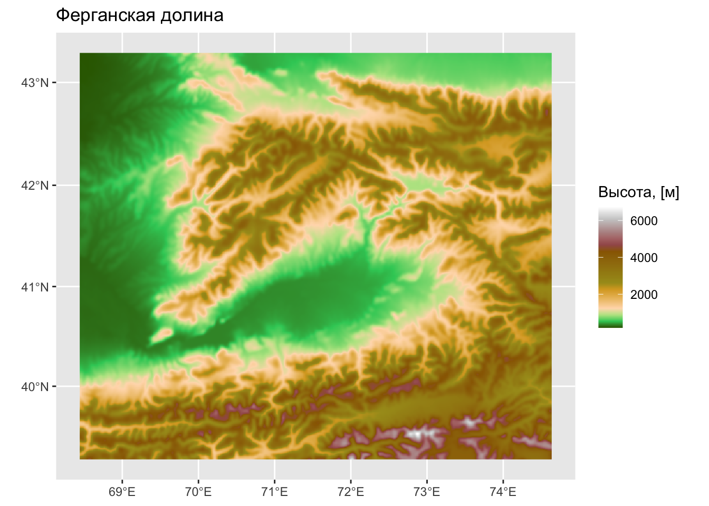
Цифровое моделирование рельефа и геоморфометрия
Основы геоинформатики: лекция 7
Цифровая модель рельефа
- Цифровая модель рельефа (ЦМР)
-
Покрытие, функция которого возвращает отметку высоты земной поверхности.
- Покрытие (Open Geospatial Consortium Inc. 2005)
-
Пространственный объект, который действует как функция, возвращающая значения
в пределах своей области значений (атрибутивного домена);
в пределах своей области определения (пространственного, временного или пространственно-временного домена);
для любой прямой позиции — координат в системе координат покрытия.
Растровая ЦМР
Наиболее часто для представления ЦМР используются растровые покрытия.
В качестве функции покрытия используется билинейная, бикубическая и прочие методы интерполяции.
Справа изображен фрагмент растровой ЦМР. Окрестность \(3 \times 3\).
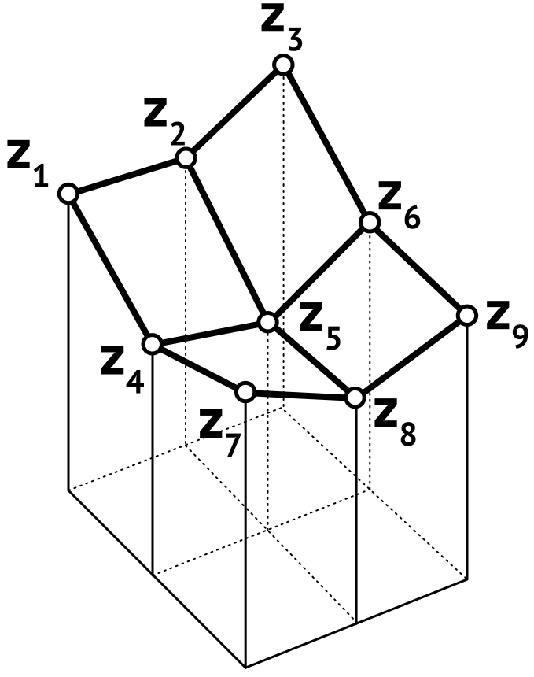
Растровая ЦМР — пример
Геоморфометрия
Геоморфометрия — геометрический анализ земной поверхности.
Распространенные задачи геоморфометрии включают:
- Вычисление локальных морфометрических величин.
- Выделение форм и элементов форм рельефа.
- Гидрологический и топоклиматический анализ.
Для представления поверхности как правило используется ЦМР.
Применение
Методы геоморфометрии могут применяться к рельефу любой поверхности, не только земной. Например, градиент (скорость изменения) может быть вычислен как для отметок высот, так и для температур.
Аппроксимация поверхности
Для вычисления производных поверхность локально аппроксимируется.
Например, в методе Эванса (Evans 1980) используется функция 2 степени:
\[ Z(x,y) = \\ Ax^2 + By^2 + Cxy + Dx +Ey + F \]
Узлов больше чем коэффициентов
Поэтому поверхность не проходит через узлы, а даёт общий тренд. Устойчивость к случайным ошибкам в данных повышается.
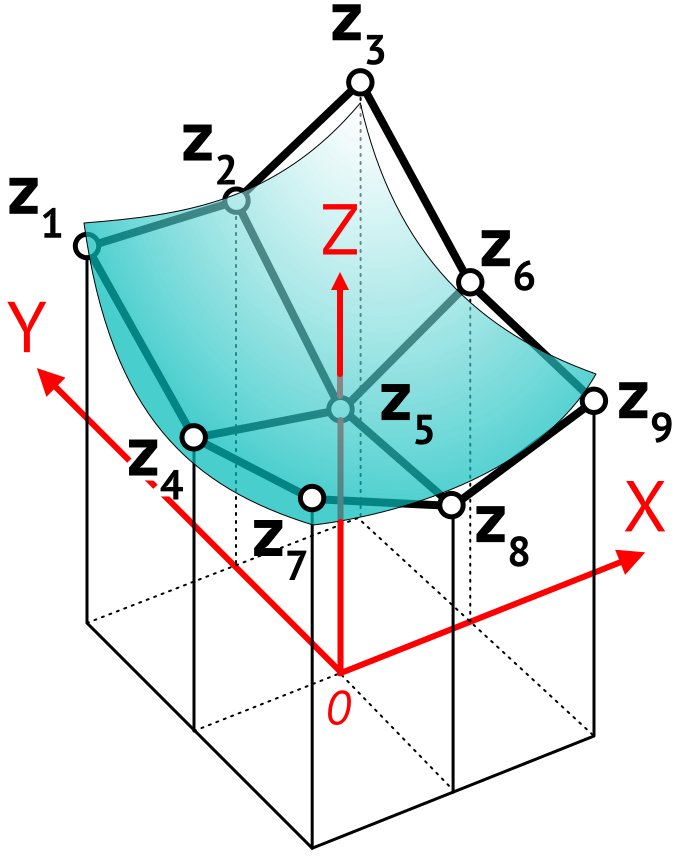
Производные поверхности
Производные поверхности имеют важнейшее значение для анализа рельефа:
\[ \frac{\partial Z}{\partial x} = 2Ax + Cy + D \rightarrow Z_x \\ \frac{\partial Z}{\partial y} = 2By + Cx + E \rightarrow Z_y \]
При вычислении в центральном узле окрестности:
\[ Z_x (0,0) = D; \ \ Z_y (0,0) = E \]
Морфометрические величины
Морфометрические величины, рассчитываемые для узла сетки называются локальными.
Уклон (\(S\)) и угол наклона (\(\phi\)):
\[ S = \sqrt{Z_x^2 + Z_y^2}; \ \phi = \arctan(S) \]
Экспозиция:
\[ \theta = \pi - \arctan \Big(\frac{Z_y}{Z_x}\Big) + \frac{\pi}{2} \Big(\frac{Z_x}{|Z_x|}\Big) \]
Морфометрические величины
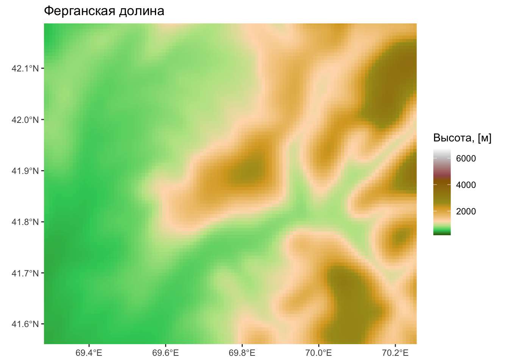
Морфометрические величины
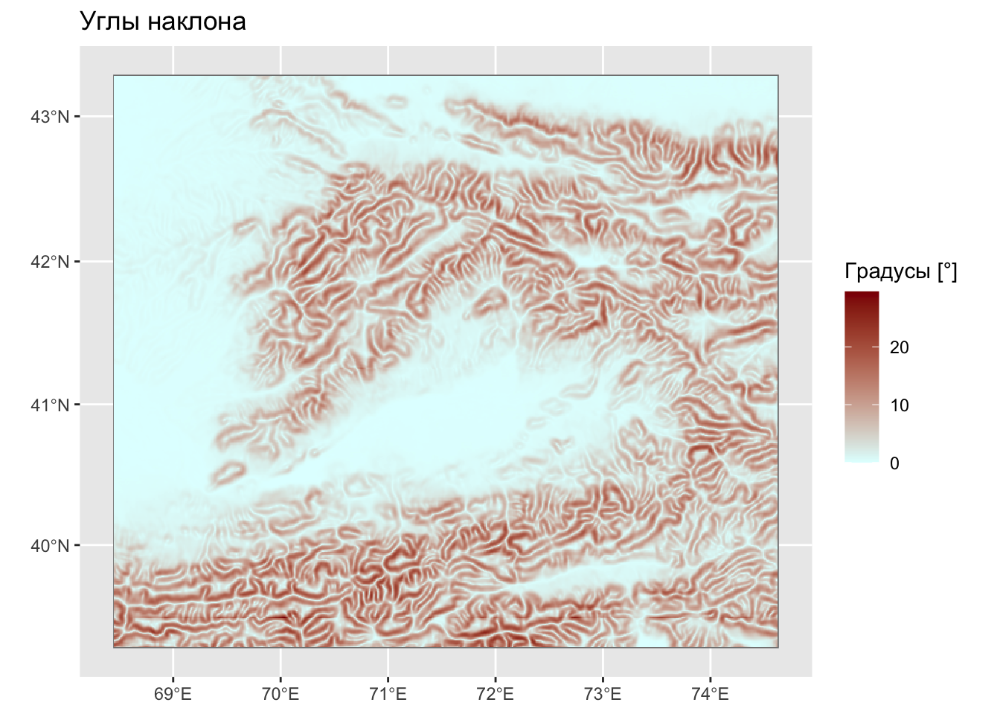
Морфометрические величины
Кривизна кривой обратно пропорциональна радиусу касательной окружности \(r\) — радиусу кривизны.
чем больше радиус, тем меньше кривизна;
выпуклые и вогнутые изгибы различаются знаком кривизны;
единица измерения кривизны обычно \(1/м\).
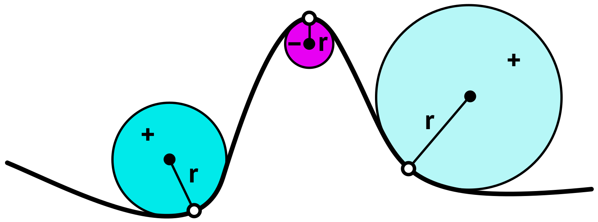
Морфометрические величины
Плановая кривизна:
\[ K_{p} = \frac{Z_{xx} \color{red}{Z_x^2 +} 2Z_{xy} Z_x Z_y + Z_{yy} \color{red}{Z_y^2} }{pq^{3/2}} \]
Интерпретация
Кривизна изолинии поверхности в точке. Положительные значения соответствуют областям конвергенции (тальвеги), отрицательные — дивергенции (хребты).
Профильная кривизна:
\[ K_{c} = \frac{Z_{xx} \color{blue}{Z_y^2 -} 2Z_{xy} Z_x Z_y + Z_{yy} \color{blue}{Z_x^2} }{pq^{3/2}} \]
Интерпретация
Кривизна склона в направлении максимального уклона. Положительные значению соответствуют увеличению уклона, отрицательные — уменьшению.
\(\frac{\partial^2 Z}{\partial x^2} = 2A \rightarrow Z_{xx}; \ \frac{\partial^2 Z}{\partial y^2} = 2B \rightarrow Z_{yy}; \ \frac{\partial^2 Z}{\partial x \partial y} = C \rightarrow Z_{xy}\)
\(p = Z_x^2 + Z_y^2; \ q = p + 1\)
Морфометрические величины
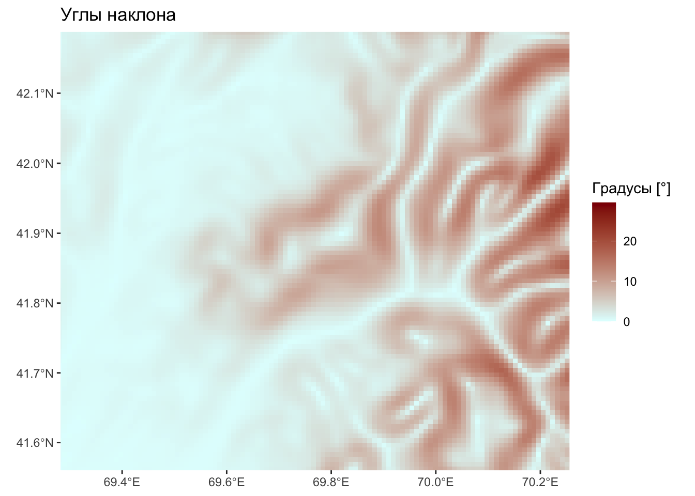
Морфометрические величины
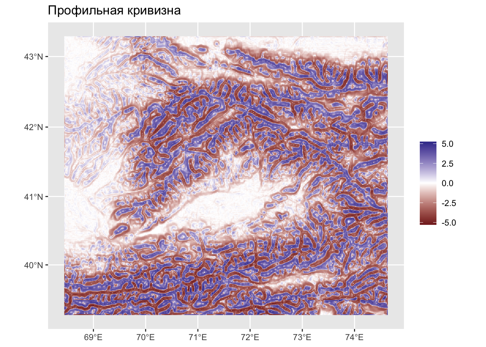
Интенсивность отражения света
В модели Ламберта зависит от угла между вектором нормали к поверхности \(\textbf N\) и вектором направления на источник света \(\textbf L\):
\[ I = \cos \alpha = \frac{(\textbf L, \textbf N)}{||\textbf N||} \]
\(\textbf N = \big\{-Z_x, -Z_y, 1 \big\}\)
\(\textbf L = \begin{cases} \cos(h) \cos(A),\\ \cos(h) \sin(A),\\ \sin(h) \end{cases}\)
\((\textbf L, \textbf N)\) — скалярное произведение;
\(A, \ h\) — азимут и высота источника света (Солнца).
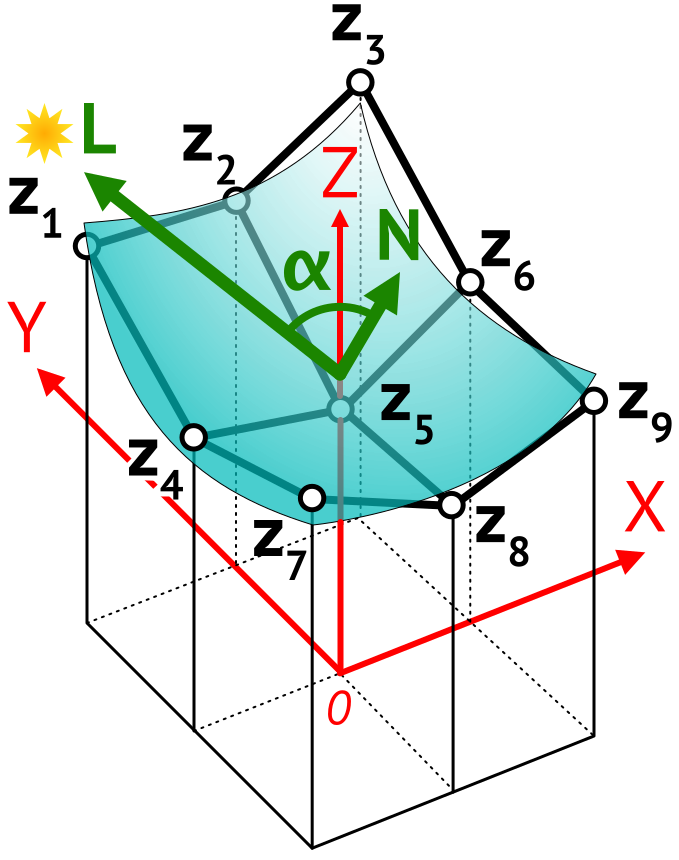
Аналитическая отмывка
Визуализация интенсивности отраженного света.
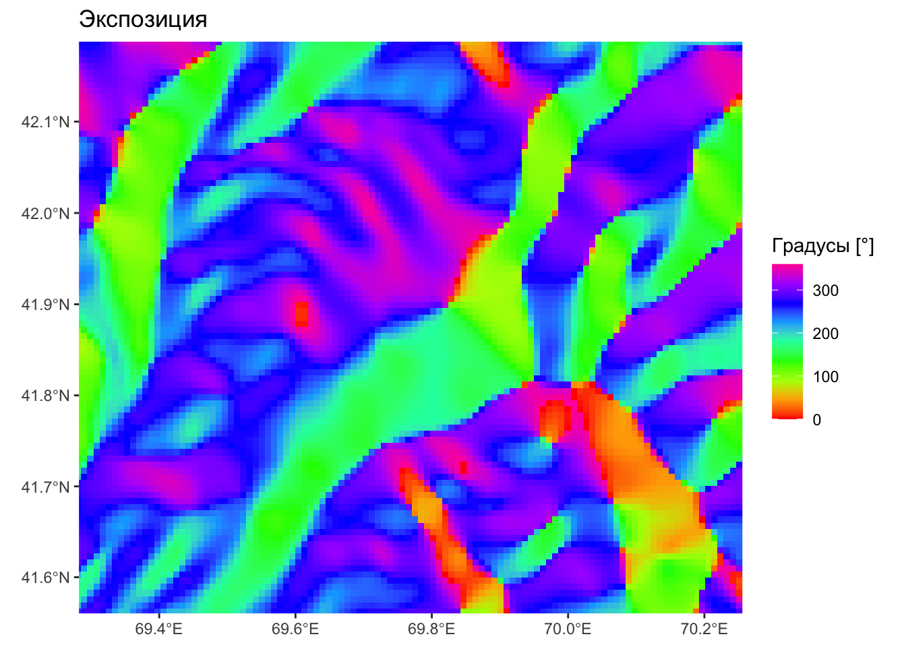
Аналитическая отмывка
Отвесная отмывка подчеркивает линии хребтов.
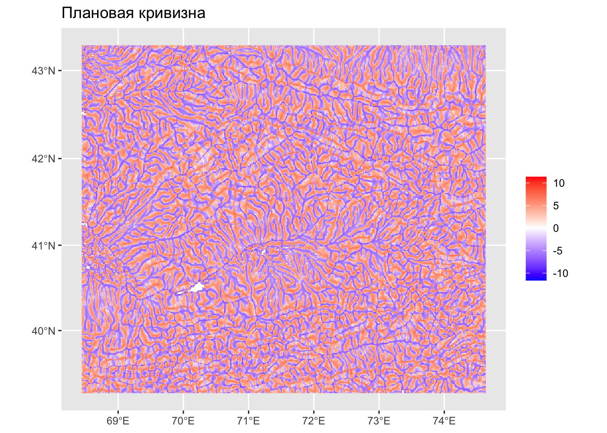
Аналитическая отмывка
Наиболее наглядна комбинация боковой и отвесной отмывки.
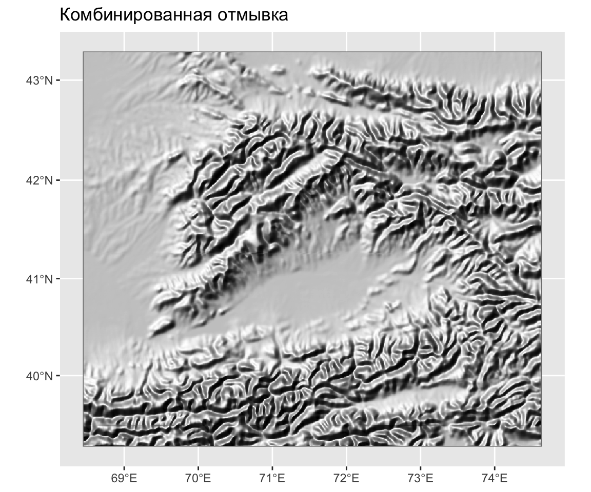
Гидрологический анализ ЦМР
Гидрологический анализ ЦМР — совокупность методов обработки ЦМР, связанных с анализом и моделированием геометрических условий распределения поверхностного стока.
Распространенные задачи гидрологического анализа включают:
- Определение направлений стока.
- Вычисление площади водосбора.
- Построение сети потенциальных водотоков.
- Построение границ бассейнов.
Предварительная подготовка ЦМР
Для гидрологического анализа играют очень важную роль процедуры предварительной подготовки ЦМР, такие как заполнение замкнутых понижений.
Направление стока
Направление стока указывает распределение стока по одному или множеству направлений.
В методе D8 (O’Callaghan и Mark 1984) весь сток направляется в направлении пикселя с максимальным уклоном.
Направления кодируются числами вида \(2^n\).
Код
0используется для бессточных пикселей.Направление стока строго однозначно.

Направление стока
Направление стока указывает распределение стока по одному или множеству направлений.
В методе D8 (O’Callaghan и Mark 1984) весь сток направляется в направлении пикселя с максимальным уклоном.
Направления кодируются числами вида \(2^n\).
Код
0используется для бессточных пикселей.Направление стока строго однозначно.
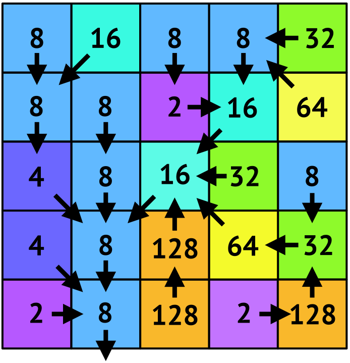
Направление стока
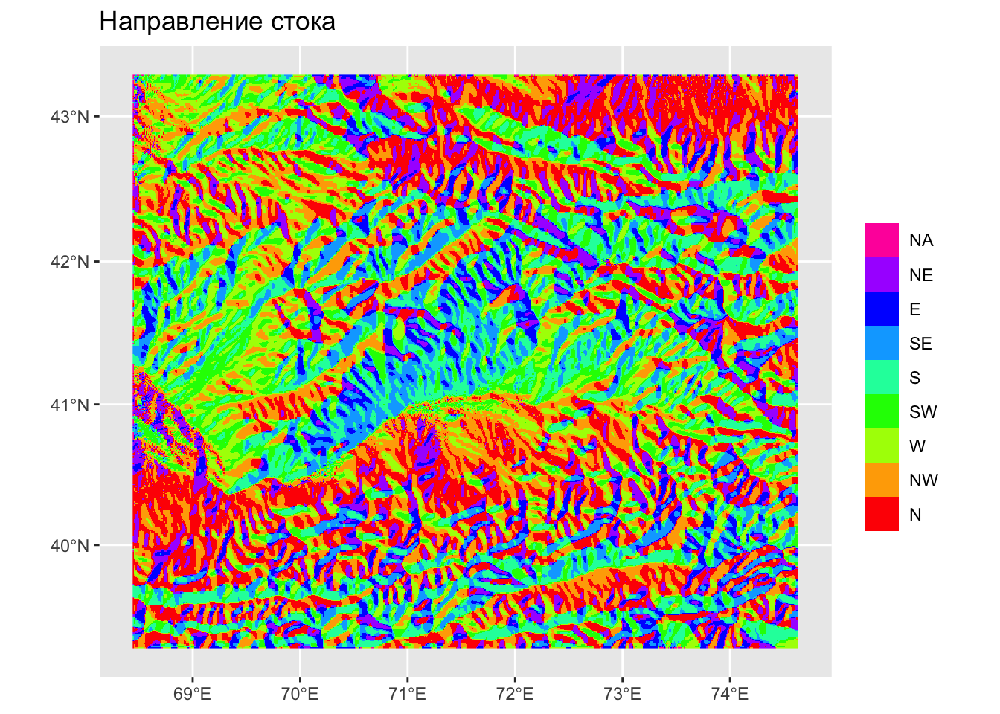
Аккумуляция стока
Аккумуляция стока — количественный показатель, аппроксимирующий площадь бассейна.
Может быть выражена в:
количестве дренируемых пикселей — сток из которых попадает в данный пиксель;
суммарной площади дренируемых пикселей.
суммарной площади дренируемых пикселей, нормированной на их ширину перпендикулярно направлению стока.
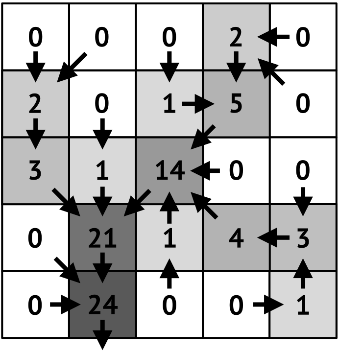
Аккумуляция стока
Аккумуляция стока — количественный показатель, аппроксимирующий площадь бассейна.
Аккумуляция в \(j\)-м пикселе:
\[ A_j = k + \sum_{i=1}^k A_i, \]
\(k\) — количество соседних пикселей, сток из которых попадает в \(j\)-й;
\(A_i\) — величина аккумуляции стока в \(i\)-м пикселе.
Аккумуляция стока
Алгоритм вычисления:
- Записать \(A_j=0\) во все пиксели, не имеющие входящего стока.
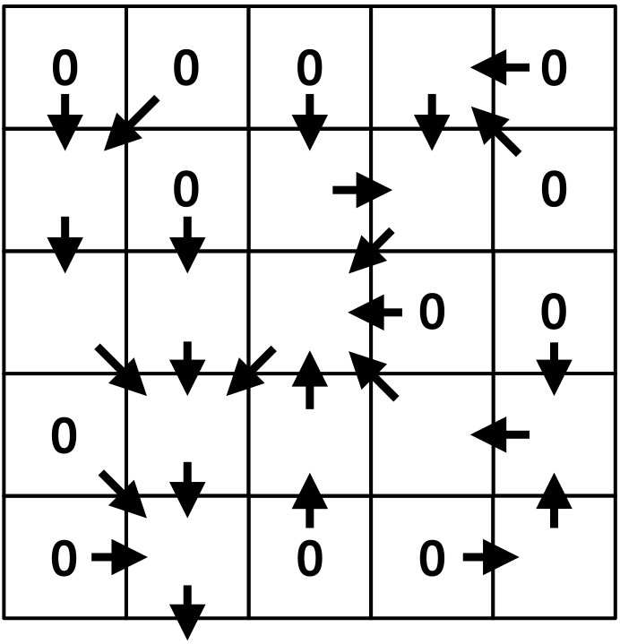
Аккумуляция стока
Алгоритм вычисления:
- Записать \(A_j=0\) во все пиксели, не имеющие входящего стока.
- Вычислить \(A_j = k + \sum_{i=1}^k A_i\) для всех пикселей, у которых \(A_i\) определено для всех входящих пикселей.
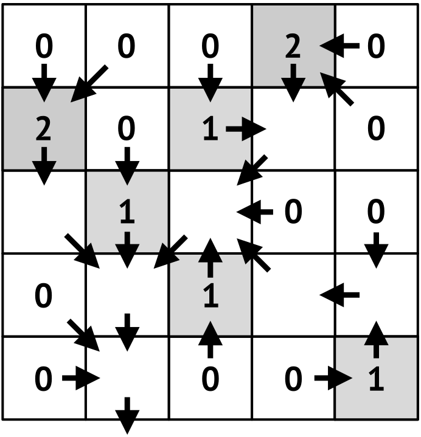
Аккумуляция стока
Алгоритм вычисления:
- Записать \(A_j=0\) во все пиксели, не имеющие входящего стока.
- Вычислить \(A_j = k + \sum_{i=1}^k A_i\) для всех пикселей, у которых \(A_i\) определено для всех входящих пикселей.
- Повторять шаг 2 до тех пор, пока \(A_j\) не будет известно для всех пикселей ЦМР.
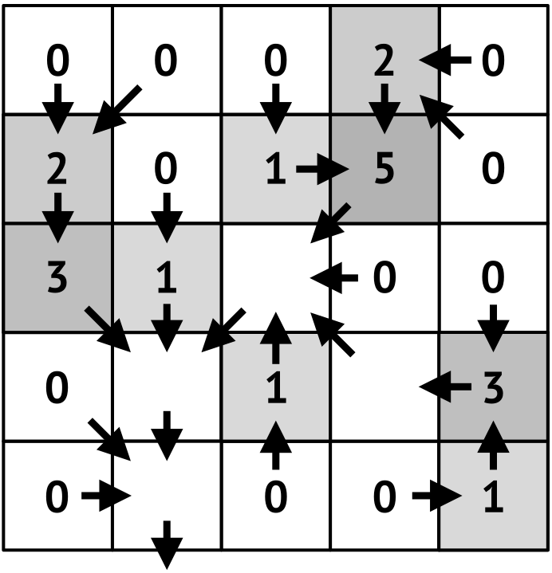
Аккумуляция стока
Алгоритм вычисления:
- Записать \(A_j=0\) во все пиксели, не имеющие входящего стока.
- Вычислить \(A_j = k + \sum_{i=1}^k A_i\) для всех пикселей, у которых \(A_i\) определено для всех входящих пикселей.
- Повторять шаг 2 до тех пор, пока \(A_j\) не будет известно для всех пикселей ЦМР.
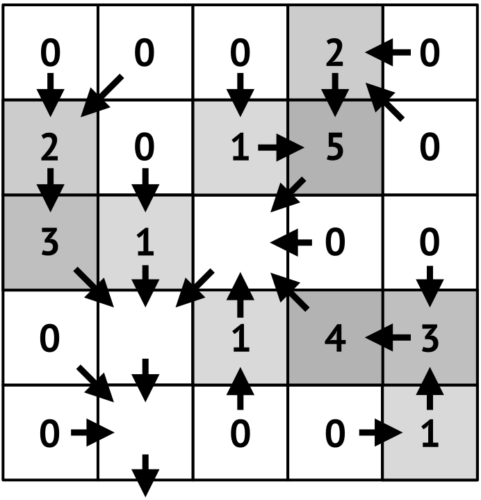
Аккумуляция стока
Алгоритм вычисления:
- Записать \(A_j=0\) во все пиксели, не имеющие входящего стока.
- Вычислить \(A_j = k + \sum_{i=1}^k A_i\) для всех пикселей, у которых \(A_i\) определено для всех входящих пикселей.
- Повторять шаг 2 до тех пор, пока \(A_j\) не будет известно для всех пикселей ЦМР.
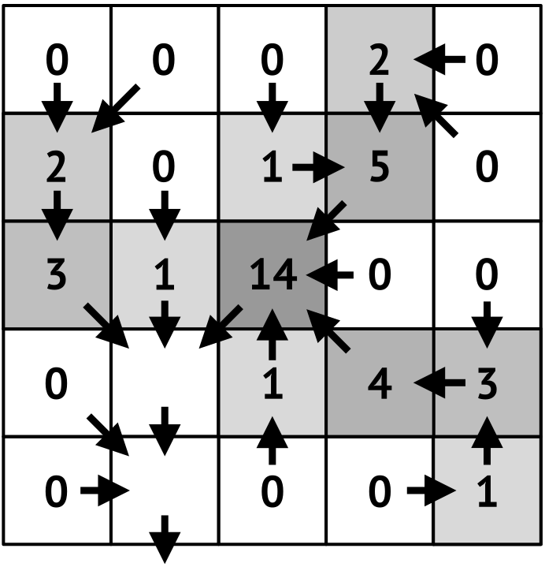
Аккумуляция стока
Алгоритм вычисления:
- Записать \(A_j=0\) во все пиксели, не имеющие входящего стока.
- Вычислить \(A_j = k + \sum_{i=1}^k A_i\) для всех пикселей, у которых \(A_i\) определено для всех входящих пикселей.
- Повторять шаг 2 до тех пор, пока \(A_j\) не будет известно для всех пикселей ЦМР.
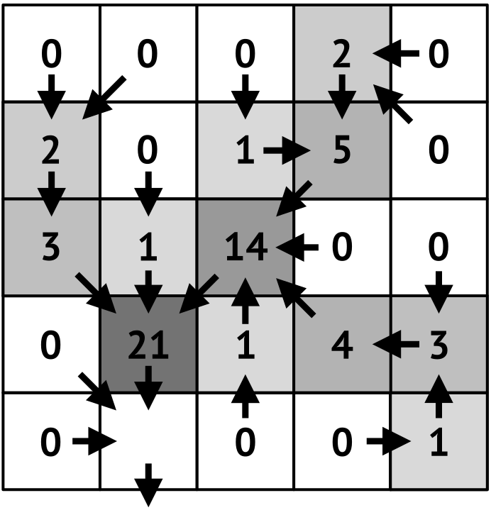
Аккумуляция стока
Алгоритм вычисления:
- Записать \(A_j=0\) во все пиксели, не имеющие входящего стока.
- Вычислить \(A_j = k + \sum_{i=1}^k A_i\) для всех пикселей, у которых \(A_i\) определено для всех входящих пикселей.
- Повторять шаг 2 до тех пор, пока \(A_j\) не будет известно для всех пикселей ЦМР.
Аккумуляция стока
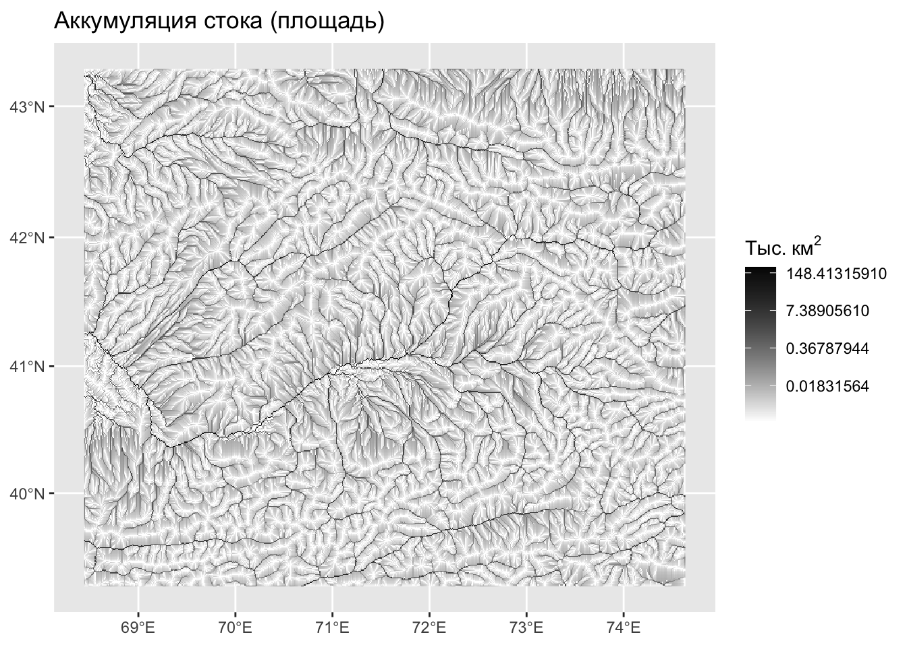
Потенциальные водотоки
Потенциальные водотоки — линии с высокой аккумуляцией стока.
- Выделяют пиксели, аккумуляция стока в которых превышает заданную величину. На рисунке справа представлен пример для \(A \geq 2\).
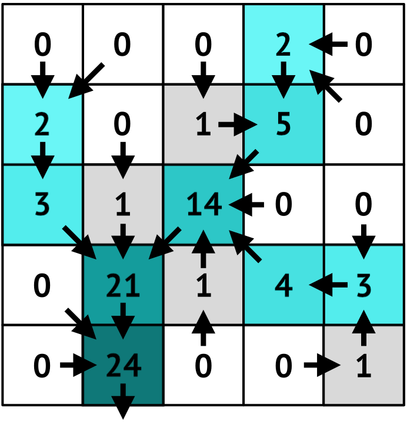
Потенциальные водотоки
Потенциальные водотоки — линии с высокой аккумуляцией стока.
- Выделяют пиксели, аккумуляция стока в которых превышает заданную величину. На рисунке справа представлен пример для \(A \geq 2\).
- Выполняют трассировку линий по узлам выделенных пикселей с использованием растра направлений стока.
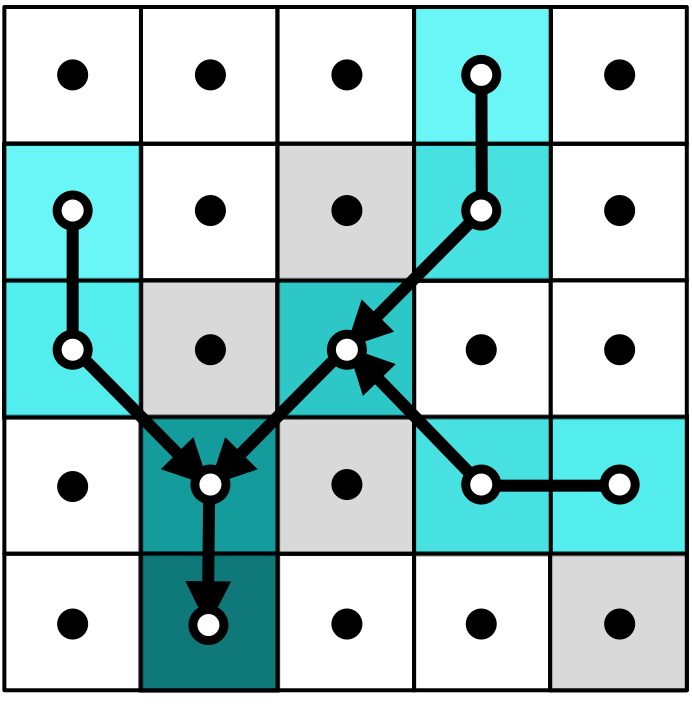
Потенциальные водотоки
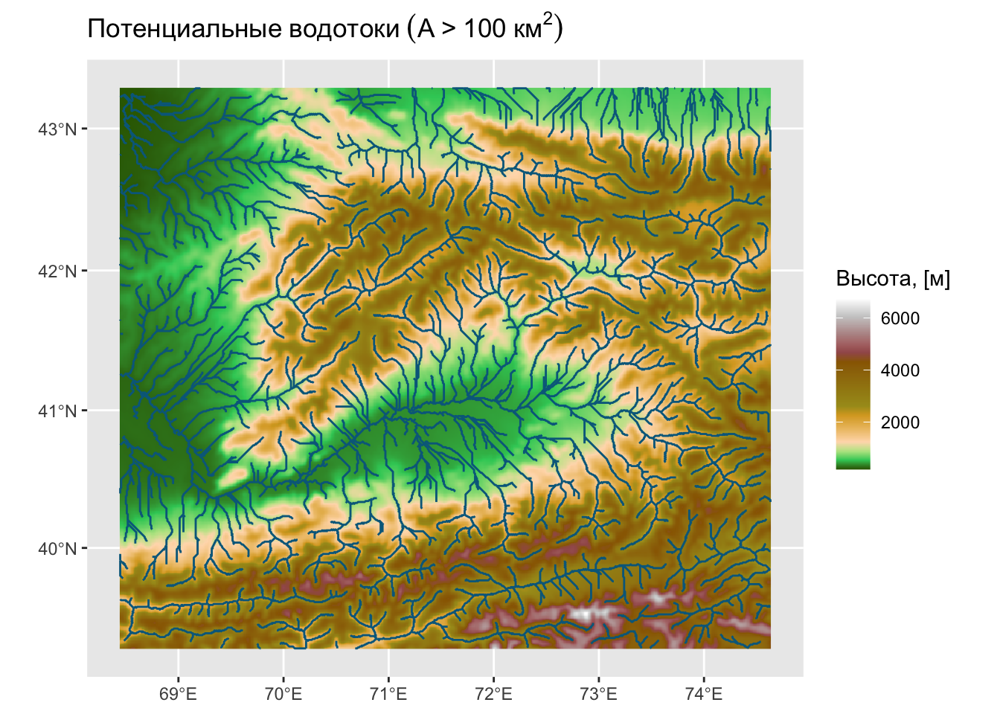
Потенциальные водотоки
Дренажный граф
Дренажный граф — частный случай сети потенциальных водотоков, который получается при \(A \geq 0\), а каждая линия соответствует одной связи в растре направлений стока.
Особенность
Дренажный граф представляет полную систему связей между ячейками ЦМР.
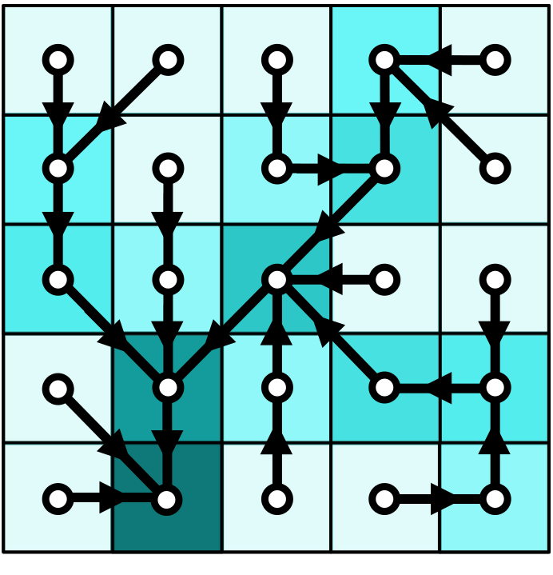
Бассейн
Бассейн получается путём поиска по модели направлений стока всех пикселей, сток из которых попадает в указанный пиксель.
Важно
Обычно на карте указывают точку для определения границы бассейна. Если она попала в пиксель с низкой аккумуляцией стока, то будет выделен бассейн малой площади.
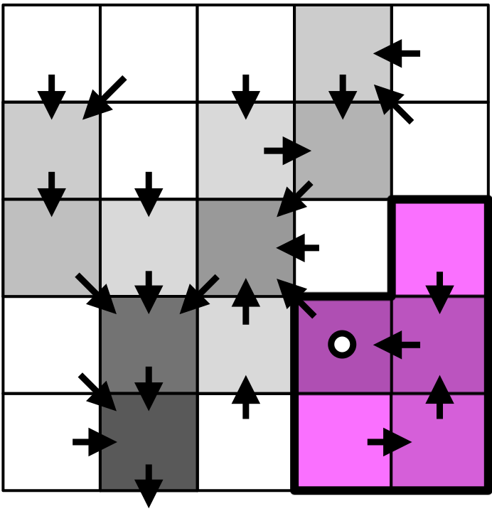
Бассейн
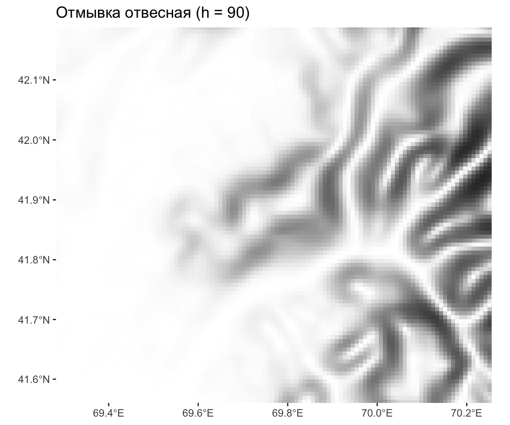
Словарик
Цифровая модель рельефа
Поверхность
Геоморфометрия
Производная
Уклон
Экспозиция
Кривизна
Отмывка
Направление стока
Аккумуляция стока
Бассейн / водосбор
Digital elevation model
Surface
Geomorphometry
Derivative
Slope
Aspect
Curvature
Hillshading
Flow direction
Flow accumulation
Basin / watershed
Библиография
Evans, I S. 1980. «An integrated system of terrain analysis and slope mapping». Zeitschrift fur Geomorphologie 36: 274–95.
O’Callaghan, John F, и David M Mark. 1984. «The extraction of drainage networks from digital elevation data». Computer Vision, Graphics, and Image Processing 28 (3): 323–44. https://doi.org/10.1016/S0734-189X(84)80011-0.
Open Geospatial Consortium Inc. 2005. «OGC 07-011 (ISO 19123:2005). The OpenGIS® Abstract Specification Topic 6: Schema for coverage geometry and functions». Open Geospatial Consortium Inc.